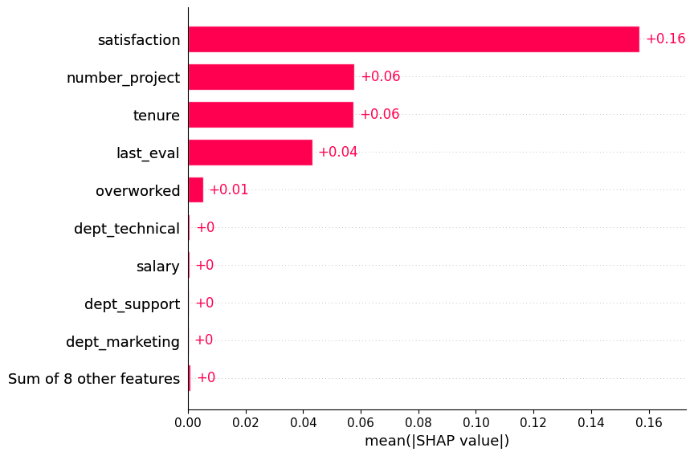
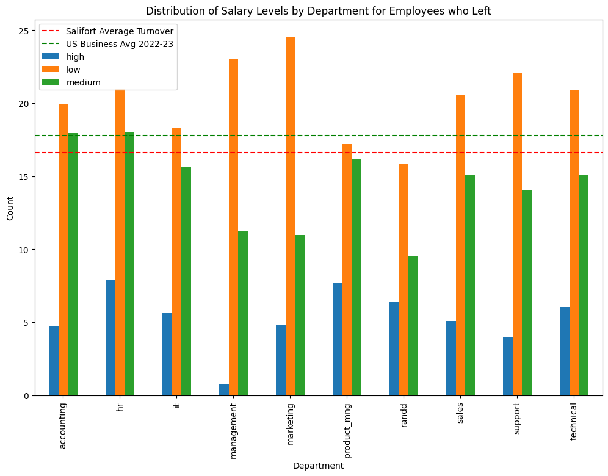
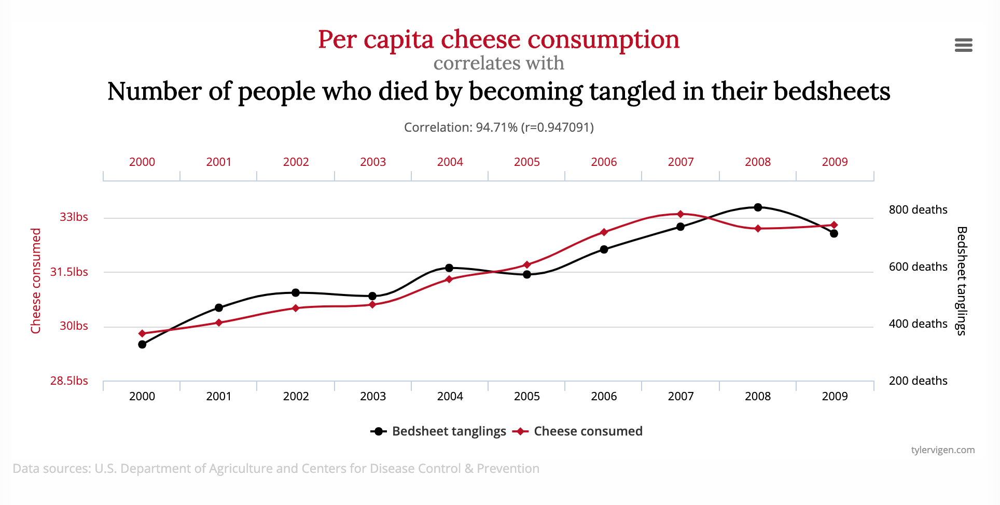

| Project Home | Client Proposal | PACE Plan | Analyst’s Summary | Executive Summary | HR Summary | Team Summary |
| Document Title | Salifort Motors - Executive Summary |
| Author | Rod Slater |
| Version | 1.0 |
| Created | 01-11-2023 |
| Modified | 16-11-2023 |
| Client Name | Salifort Motors |
| Client Contact | Mr HR Team |
| Client Email | hr@salifortmotors.it |
| Client Project | HR Team Data Driven Solutions from Machine Learning Models |
Data provided by the Salifort team was analysed to determine key factors in employees leaving the company. A machine learning model was built and used to model current employees and identify the key reasons for employees leaving.
Exploratory Data Analysis was carried out on the provided data and key features of employees who left (the predictor) were identified during the ML modelling phase.

In the year 2020, industries across the board experienced a significant surge in turnover rates. This trend was largely attributed to the challenges posed by the pandemic, leading many companies to adapt to closures, downsizing, or the shift to remote work.
Despite the gradual return to normalcy, employees continue to depart for new opportunities at an unprecedented rate. Employee turnover exacts a considerable cost, with the hiring process alone accounting for at least half of the departing employee’s annual salary. Moreover, as more individuals leave, the company culture may suffer, placing additional stress on remaining staff.
While some turnover is inevitable, aiming for a 10% turnover rate is prudent. According to the Society for Human Resource Management (SHRM), most companies currently hover around a 20% turnover rate. The ideal rate depends on various factors, including industry and internal promotion rates.

It is imperative to acknowledge that employees are individuals, not mere figures or resources. Creating a culture that fosters a sense of value, career development , visibility, and care is crucial to encouraging employee retention.
To cultivate such a culture, consider implementing the following tips into your retention strategy:
88% of individuals consider professional development and career growth as crucial when evaluating potential employers. Investing in the programs is essential. This commitment not only cultivates skilled and confident employees but also demonstrates a genuine concern for their ongoing improvement and success.
Competitive and fair salaries for every position within the company are pivotal to any retention strategy. Ensure that leaders seriously consider requests for raises. Additionally, creative benefits such as health insurance, vision and dental coverage, and unique perks like free snacks or wellness programs can significantly contribute to employee satisfaction.
Employees need to perceive that the company genuinely cares for them. Offering flexibility in work arrangements, such as unlimited PTO, flexible hours, or remote work options, can cater to the diverse needs of your workforce. Implementing recognition programs, such as service awards and wellness initiatives, reinforces a culture of appreciation and significantly reduces turnover.
In a landscape where employees have abundant employment options, investing time, effort, and resources in making them feel valued as integral team members is crucial. By supporting career development, enhancing compensation, and fostering a positive culture, your company can demonstrate loyalty to its employees, fostering reciprocal loyalty to the organization.
Implementing flexible working arrangements can offer numerous benefits to employers. Firstly, it fosters a positive work culture by demonstrating trust in employees’ ability to manage their tasks independently. This autonomy often leads to increased job satisfaction, which, in turn, can boost overall productivity and creativity.
Flexible working also facilitates better work-life balance, reducing burnout and improving employee well-being. This, in the long run, contributes to lower turnover rates and recruitment costs, as satisfied employees are more likely to stay with their current employer. Moreover, offering flexibility can attract a wider pool of talent, including individuals who may not be able to commit to traditional 9-to-5 schedules. Embracing flexibility reflects a progressive and adaptive approach to work, enhancing the employer’s reputation and making the company more appealing to potential employees.
Ultimately, by accommodating diverse work arrangements, employers can create a more resilient and agile workforce, better equipped to navigate the dynamic challenges of the modern business landscape.
Having detailed all of this, it’s crucial to keep in mind the principle that “correlation does not imply causation.” While ML models offer powerful predictive capabilities based on data patterns, they inherently lack the depth to discern causation in complex human behaviors.
Humans are complicated, employees even more so
Imagine a scenario where it is observed that there is a strong correlation between the usage of office snacks and increased employee engagement. It would be a mistake to assume that providing more snacks directly boosts engagement. The underlying causation might be a positive workplace culture that encourages interaction and collaboration, leading to both higher snack consumption and increased engagement.

Similarly, with employee turnover prediction, the model can identify patterns and correlations, but it’s essential to remember that correlation alone doesn’t unveil the reasons behind an employee’s decision to leave. It might hint at factors such as work dissatisfaction, but it won’t reveal the underlying causes.
It is essential that building strong relationships, competitive compensation, and genuine care for employees remains paramount. While ML models can enhance the understanding, they cannot replace the human touch in addressing individual concerns and motivations. A well-compensated and engaged workforce is not merely a statistical outcome; it reflects the tangible efforts that must be invested in creating a positive work environment.
As you integrate ML into your HR strategies, it should be viewed as a complementary tool that works hand-in-hand with existing and new practices. The commitment to fostering a workplace where employees feel valued and heard will always be at the core of success in retaining top talent.